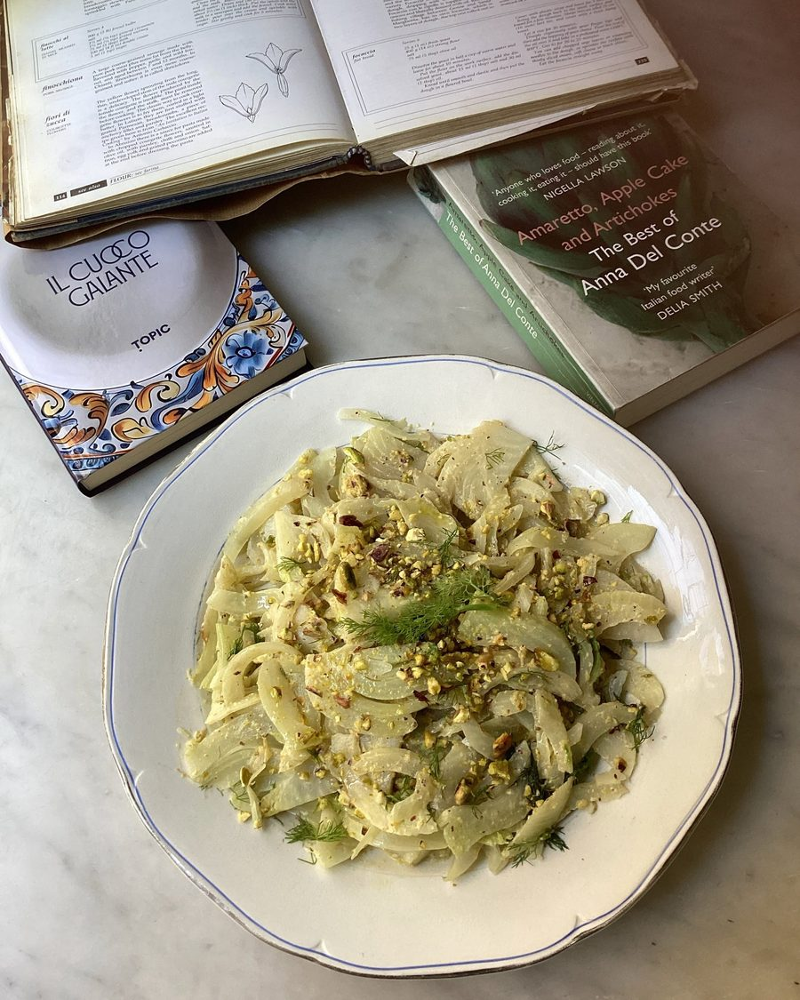

Anna del Conte and Vincenzo Corrado’s fennel with pistachio, lemon and anchovy sauce

Carla Tomasi and I would make Anna del Conte’s fennel with pistachio, lemon and anchovy sauce for a class at Latteria Studio. Anna had learned the recipe from the 18th-century writer Vincenzo Corrado, who she refers to as one of her favourite cookery writers, and notes that the dish “leaves you delighted yet puzzled as to how such an unlikely combination of flavours could blend with such complete harmony”. Corrado’s concise recipe includes no mention of resting; Del Conte suggests covering and resting the dish in the fridge for 24 hours, then bringing it back to room temperature before serving. Two stages stood out when I tasted: about an hour after mixing, when the dressing has started to sink in but the lemon is still fresh; and after 24 hours, by which time the dressing and fennel are inseparable and the dish sits halfway between a dressed vegetable and a relish. Serve with roast chicken, grilled fish, pork chops or hard-boiled eggs.
Trim the fennel and remove and discard the outer layer if bruised or particularly thick; save any frilly fronds. Cut the bulbs first into quarters and then into slim wedges (don’t worry if they fall apart a bit).
Put the wine, bay leaves, cinnamon and peppercorns in a pan, add the fennel and enough water just to cover the fennel, then bring to a boil. Reduce to a simmer and cook for about eight minutes, until the fennel is just tender. Drain and put the fennel in a shallow dish.
For the sauce, and working in either a mortar or food processor, grind or blend the pistachios, anchovy, sugar, olive oil and white-wine vinegar to a thick paste. Add the lemon juice, tasting as you go, and the lemon zest to your liking. Pour the dressing over the fennel, toss well, then rest for 20 minutes to 24 hours (for anything over two hours, cover and keep in fridge).
Before serving, let the dish return to room temperature, then finish with a few crushed pistachios, a bit more olive oil and the reserved fennel fronds, if you like.